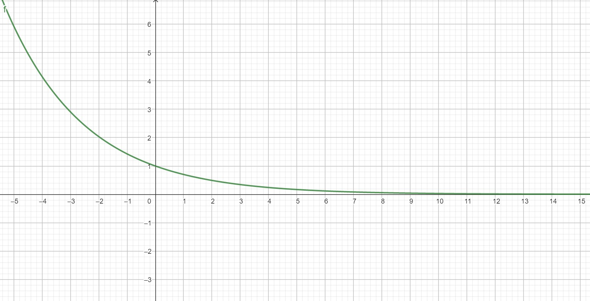
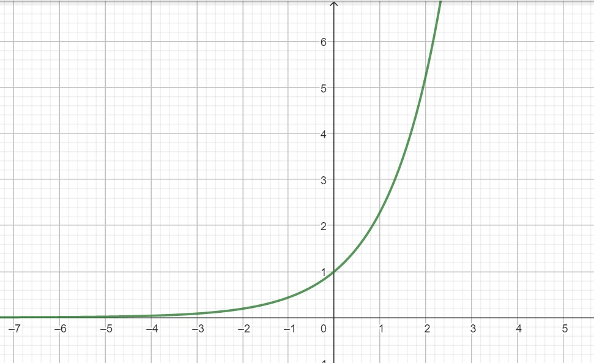
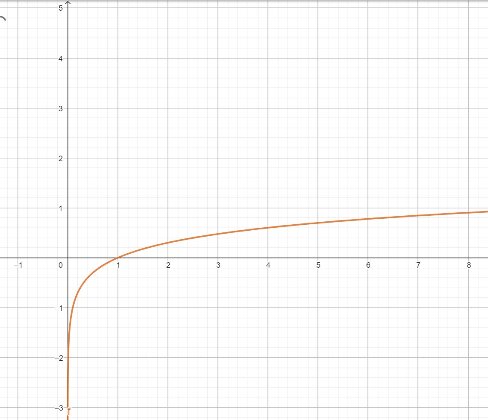
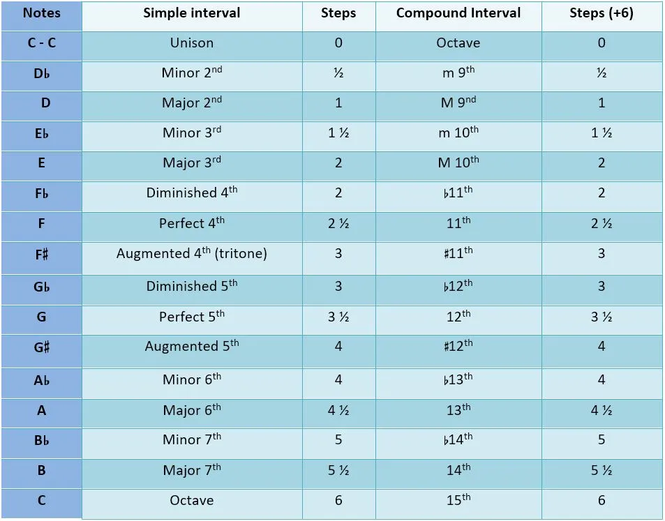
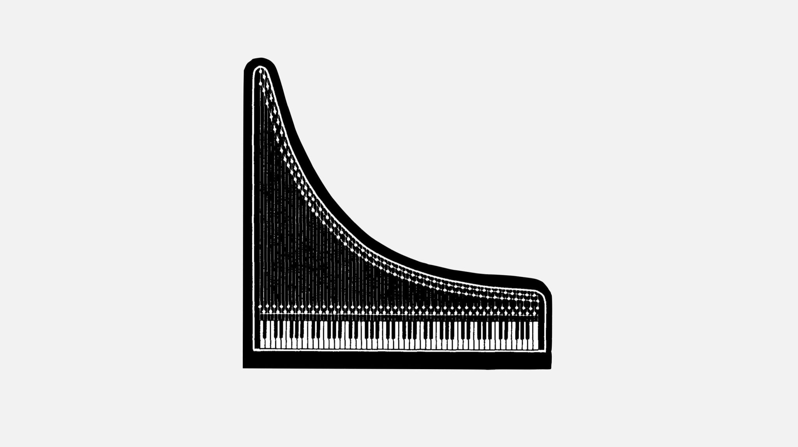

“Music is the pleasure that human soul experiences from counting without being aware that it is counting”— Gottfried Wilhelm von Leibniz (1646-1716).
One of the aspects of music that is based on tradition is which frequencies of sound may be used for ‘correct’ notes. The concept of the octave, where one note is twice the frequency of another is almost universal, but the number of other notes that may be found between is highly variable from one culture to another, as is the tuning of those notes.
In the western European tradition, there are twelve scale degrees, which are generally used in one or two assortments of seven. For the past hundred and fifty years or so, the tuning of these notes have been standardized as dividing the octave into twelve equal steps. The western equal tempered scale can then be defined as a series built by multiplying the last member by the twelfth root of two (1.05946). The distance between two notes is known by the musical term interval. (Frequency specifications are not very useful when we are talking about notes.) The smallest interval is the half step, which can be further broken down into one hundred units called cents.
Exponential Function vs Log Function
An exponential function is of the form \(y = b^x\) . As you can see \(y\) rises very rapidly for positive values of \(x\) , and decays slowly for negative values of \(x\) .

Many things in nature exhibit either exponential growth or decay; so one often describes their dynamics with an exponential relationship such as \(y(t) = b^{ct}\) where the value \(c\) determines how fast things grow or decay depending on \(c\) is positive or negative respectively.A logarithm is basically the inverse of the

exponential function. Thus \(\log_bx\) means the exponential to which you should raise \(b\) in order to obtain the number \(x\). In other words, we are asking \(b^{?}\). The number \(b\) is known as base of the logarithm.You

You should confirm by comparison, that it is just the inverse of the exponential function i.e., it’s the same function, just flipped on its side.
Sound Intensity — The Decibel Scale
Alexander Graham Bell, the inventor of the telephone, observed that the difference in sound intensity that was needed to produce a perceptible change in the loudness of two tones increases proportional to the absolute intensity of the reference tone. That is, if you are comparing two very soft tones, then only a small change in intensity is need to perceive a difference. But if you are comparing two loud tones, then a larger change in intensity is needed to perceive the difference. Importantly, he found that the ratio of the intensities of the two tones needed to produce a perceptible difference was more or less constant, irrespective of the absolute intensity level one is at.
The ‘bel’ scale was named in Bell’s honor. It is just the base 10 logarithm of the ratio of intensity (power) of two sounds \[difference\ in\ decibels = \log_{10}\bigg(\dfrac{p_1}{p_2}\bigg) \]
where \(p_1\) is the intensity of one sound and \(p_2\) is the intensity of other. Thus a difference of \(5\) bels means that the ratio of sound intensities is \(100,000\). A ‘decibel’ is simply \(\dfrac{1}{10}\) of a bel, and is denoted by db. Thus, a difference of 5 bels is the same as a difference of 50 decibels. Oftentimes the quantity one measures in an experiment is amplitude (for example, the amplitude of air pressure variations), and since power (what we have been loosely calling intensity) is proportional to the square of the amplitude, we have,
\[ difference\ in\ decibels = \log_{10}\bigg(\dfrac{a_1}{a_2}\bigg)^2 \] where \(a_1\) is the amplitude of one sound and \(a_2\) is the amplitude of other.
Music
Perhaps one of the most interesting questions about music perception is why some intervals sound pleasing (consonant) and others sound harsh or difficult to bear (dissonant)?

Interestingly, the consonant intervals all have integer-fraction frequency ratios. The consequence of this is that their harmonics will tend to either align or else produce other consonant frequency ratios. For example, the second harmonic \(G\) will be \(2\bigg(\dfrac{3}{2}\bigg)=3\) times of the fundamental \(C\) . Thus, the second harmonic of G exactly aligns with the third harmonic of C. But this still doesn’t answer all of our questions. What if we were to just play two pure tones that don’t have any harmonics. We still get dissonance when they are next to each other in frequency. Why? The answer seems to be that it has something to do with critical bandwidth–i.e., the region over which frequencies significantly interact within a nerve fiber, which is about \(\dfrac{1}{3}\) octave. The degree of perceived consonance between two tones depends on their relation to the critical bandwidth. If they are further apart than the critical bandwidth, then they are perceived to be consonant, but if within the critical bandwidth they are perceived dissonant. Of course, as the two tones become even closer to one another they again become consonant. Thus, there seems to be a relation between dissonance and the bandwidth of frequency-tuned mechanisms in the cochlea and auditory nerve, but what interactions occur exactly that give rise to the percept of dissonance, and how this is processed and represented by the nervous system, is currently unknown.
The Modern Piano and Mathematics
The modern piano has been designed to have an equally-tempered scale, meaning that the ratio between the frequencies of any two adjacent notes—for example, C to C# is (approximately) the same no matter where you go on the keyboard. Thus, musical instruments have been designed around the logarithmic representation of frequency in the nervous system. Thus, a logarithmic scale provides a natural, intuitive way to describe sound intensity, because equal ratios, or equally discriminable sound levels, are converted to equal differences or intervals on the log-scale. Logarithmic scales provide a useful way to describe many types of natural phenomena.

A lot of pianos look like an exponential because for waves on a string, doubling length means reducing a music pitch by an octave (2x the frequency). The “Stretched Harmonics” of a plain steel wire string produces an inharmonicity of pitch values produced by the High Tension (~200lbs.) on piano strings. This is why pianos have the “Chime like” sound of tone color rather than other stringed instruments which have lower string tension. (35-50lbs.). Eg. Nylon string classical guitar has a harmonic sonority close to a mathematical harmonic series.
Piano tones, though, are stretched by a geometric factor of “~1.1x” because of the physical high tension in the wire, and have that ’Bell Like” set of partials.
The tuning of piano by some professionals of piano keys will blend with each other, and are slightly higher (by an epsilon fraction) than a 2x doubling in octave frequency.